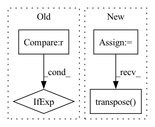

Pattern ID :16661

Before Change
mv = get_child(self, k)
vnp = v.astype(np.float32)
vnp = vnp if k != "_fc" else vnp.T
vnp = vnp if vnp.shape != () else np.array([vnp])
if mv.shape == vnp.shape:
mv.assign(vnp)
After Change
//print(k, v.shape)
mv = get_child(self, k)
vnp = v //.astype(np.float32)
vnp = vnp if k != "_fc" else vnp.transpose()
//vnp = vnp if vnp.shape != () else np.array([vnp])
if mv.shape == vnp.shape:
mv.assign(vnp)
In pattern: SUPERPATTERN
Frequency: 3
Non-data size: 4
Instances
Fragment ID: 55844276
Project Name: geohot/tinygrad
Commit Name: b1206bcb18cbfff076b30c880d190ce897186a37
Time: 2023-03-10
Author: 72895+geohot@users.noreply.github.com
File Name: models/efficientnet.py
M Class Name: EfficientNet
N Class Name: EfficientNet
M Method Name: load_from_pretrained(1)
N Method Name: load_from_pretrained(1)
M Parent Class:
N Parent Class:
M File Name: models/efficientnet.py
N File Name: models/efficientnet.py
M Start Line: 148
M End Line: 158
N Start Line: 148
N End Line: 158
'>
Before Change
text_emo_vecs_origin = self.textEmoEmbs(torch.LongTensor(list(range(self.num_classes))).to(self.device))
text_emo_vecs = text_emo_vecs_origin.unsqueeze(0).repeat(batch_size, 1, 1)
text_attn_weights = self.attention(output_text, text_emo_vecs)
logits = text_attn_weights if logits is None else logits + text_attn_weights
if "a" in self.modalities:
output_audio, _ = self.RNNs[1](X_audio)
After Change
batch_size = X_text.size(0)
text_emo_vecs_origin = self.textEmoEmbs(torch.LongTensor(list(range(self.num_classes))).to(self.device))
logits = None
scores = []
if "t" in self.modalities:
output_text, _ = self.RNNs[0](X_text)
output_text = output_text[:, -1, :]
text_emo_vecs = text_emo_vecs_origin.unsqueeze(0).repeat(batch_size, 1, 1)
text_attn_weights = self.attention(output_text, text_emo_vecs)
// logits = text_attn_weights if logits is None else logits + text_attn_weights
scores.append(text_attn_weights.unsqueeze(0))
if "a" in self.modalities:
output_audio, _ = self.RNNs[1](X_audio)
output_audio = output_audio[:, -1, :]
audio_emo_vecs = self.affineAudio(text_emo_vecs_origin)
audio_emo_vecs = audio_emo_vecs.unsqueeze(0).repeat(batch_size, 1, 1)
audio_attn_weights = self.attention(output_audio, audio_emo_vecs)
// logits = audio_attn_weights if logits is None else logits + audio_attn_weights
scores.append(audio_attn_weights.unsqueeze(0))
if "v" in self.modalities:
output_visual, _ = self.RNNs[2](X_visual)
output_visual = output_visual[:, -1, :]
visual_emo_vecs = self.affineVisual(text_emo_vecs_origin)
visual_emo_vecs = visual_emo_vecs.unsqueeze(0).repeat(batch_size, 1, 1)
visual_attn_weights = self.attention(output_visual, visual_emo_vecs)
// logits = visual_attn_weights if logits is None else logits + visual_attn_weights
scores.append(visual_attn_weights.unsqueeze(0))
scores = torch.cat(tuple(scores), dim=0).transpose(0, 2)
logits = self.modality_weights(scores)
logits = logits.squeeze().t()
// for i in range(len(self.modalities)):
// if i == 0:
'>
Fragment ID: 55844277
Project Name: wenliangdai/modality-transferable-mer
Commit Name: eaf8a7cf6ec5b7ed6389b9d73cd6bb31fc1576c2
Time: 2020-06-10
Author: wenliang.dai.1995@gmail.com
File Name: src/models/temp.py
M Class Name: EmotionEmbAttnModel
N Class Name: EmotionEmbAttnModel
M Method Name: forward(4)
N Method Name: forward(4)
M Parent Class: nn.Module
N Parent Class: nn.Module
M File Name: src/models/temp.py
N File Name: src/models/temp.py
M Start Line: 71
M End Line: 94
N Start Line: 74
N End Line: 105
'>
Before Change
self.input_shape = input_shape[1:-1] if len(input_shape) == 4 else input_shape[:2]
def __call__(self, image, resize_method="bilinear", resize_antialias=False, input_shape=None):
input_shape = self.input_shape if input_shape is None else input_shape[:2]
image = tf.convert_to_tensor(image)
if tf.reduce_max(image) < 2:
image *= 255
After Change
self.set_input_shape(input_shape)
images = [image] if len(np.shape(image)) == 3 else image
images = [np.array(Image.fromarray(image).resize(self.input_shape)) for image in images]
images = (np.stack(images) - self.mean) / self.std
images = images if backend.image_data_format() == "channels_last" else images.transpose([0, 3, 1, 2])
return functional.convert_to_tensor(images)
def imagenet_decode_predictions(preds, top=5):
'>
Fragment ID: 55844278
Project Name: leondgarse/keras_cv_attention_models
Commit Name: 2f70b0d51c8f2b1f8664f32dc75ecc1001758946
Time: 2023-01-29
Author: leondgarse@gmail.com
File Name: keras_cv_attention_models/common_layers.py
M Class Name: PreprocessInput
N Class Name: PreprocessInput
M Method Name: __call__(5)
N Method Name: __call__(5)
M Parent Class:
N Parent Class:
M File Name: keras_cv_attention_models/common_layers.py
N File Name: keras_cv_attention_models/common_layers.py
M Start Line: 586
M End Line: 601
N Start Line: 609
N End Line: 616